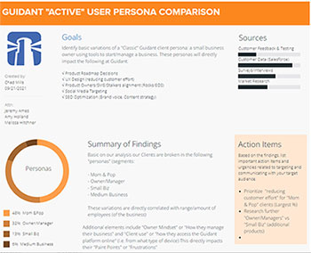
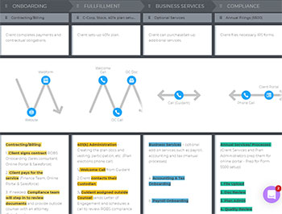

We "identify" and "understand" the customer


"STEP I - CREATE User Persona (Variants)“
- UX ANALYSIS -
Chad Mills - Guidant Financial (2020)

“STEP II - CREATE High Level Journey Map“
- UX ANALYSIS -
Chad Mills - Guidant Financial (2020)
“STEP III - AUTOMATE User Testing using 3rd Party tools (Calendly + ZOOM)“
- UX ANALYSIS -
Chad Mills - Guidant Financial (2020)